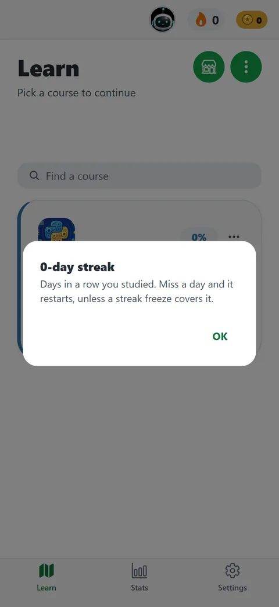

How streaks, streak freezes and Coins work in Yaaddi
Short answerYour streak counts the days in a row you studied. A streak freeze covers a missed day. Coins go up by one for every correct answer and are never taken away.
Streak
Study at least once a day to keep your streak. Tap the flame at the top of the app to see your current streak. Miss a day and it restarts, unless a freeze or the weekly grace day covers it.

Streak freezes
- You earn one every 7 days in a row, and you keep at most 2.
- A freeze is spent automatically to cover a missed day. You do not need to do anything.
- Every new learner gets one freeze on their first session.
- One missed day is also forgiven for free once every 7 days, before any freeze is used.
Streak repair
If a streak of at least 3 days ends, the app offers to bring it back: answer 15 questions that same day and it is restored. The offer expires at the end of that day.
Coins
You earn 1 Coin for every correct answer. A wrong answer, a missed day or a broken streak never lowers your Coins. Streak milestones add a one-time bonus the first time you reach them: 10 Coins at 7 days, 30 at 30 days, 100 at 100 days and 300 at 365 days. Each correct exam answer also earns a Coin.
Good to know
- Your streak and Coins are stored on your phone. Create a backup before you change phones so you do not lose them. See How to back up Yaaddi.
- The Stats tab shows your longest streak, total days studied and how many freezes you have saved, earned and used.
Common questions
Do I lose Coins if I miss a day?
No. Coins never go down. Only the streak counter restarts.
Why did my streak survive a missed day?
A streak freeze or the weekly grace day covered it. The app tells you with a Streak saved! message.
What time does my day end?
By default a new study day starts at 2:00 a.m., so late-night study still counts toward the day you started it. Settings → Advanced learning options → New day starts at changes that time.